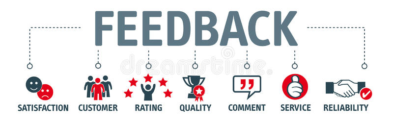

Skills and Jobs/Feedback
Skills and Jobs:
Software Tester
The software Tester performs testing on the accessibility of a software and having experience in testing applications on screen reading. The tester for this project is expected to have a general range of skills to use for testing any kind of application. A software tester for this project should be experienced in:
- User interface and experience testing
- Manual testing, checking the functionality and generating results found and missing in the project specifications.
- Validation and penetration testing to test the security and track vulnerabilities potentially found in the software.
- Document, report and provide feedback back to the team
- Test the software through every stage of its development such as the design and development in the form of agile.
As a software tester, you will be required to test our currently in development application known as Flynote. You will be tasked with giving us feedback on the design of the app and how it functions allowing us to further improve our app.
Subject Matters Expert
In the context of business or simply developing projects, a subject matters expert is heavily relied upon to create a room where knowledge and expertise on the topic is presented to the team.
A subject matters expert for this project should be experienced in:
- Effective communication; it is the most crucial foundation to set up for success. Thoughts and ideas must be conveyed throughout the project team in order to avoid confusion or mistakes.
- Extensive knowledge of what needs to be done when processes and current undertaking of tasks themselves go awry. For instance, lack of time before a due date or an unexpected event occurs resulting in failure of operations, must be able to be resolved.
- Planning should be precise, they should understand the workload of the team and perceive whether plans appear realistic or not.
As a subject matters expert, you are required to convey your ideas with the team as in your ideas, what can be improved in the Flynote application, making sure it adheres to Nielsen's 10 usability heuristics. You are to develop a plan that should be followed by the team within a due date.
Full-stack developer
A full-stack developer is a web developer and is skilled in both front end and back end web programming. A front end developer uses programming languages such as HTML, CSS and JavaScript to create a website’s appearance. A back end developer uses programming languages such as Java, ruby and python to code the communication of the database information to the browser.
A Full-stack developer for this project should be experienced in:
- Front end development skills to design a webpage. With that, basic design skills are necessary to make the website more intriguing for users.
- Back end development skills to build the server-side functions. A code must be written, serving the purpose of relaying database information to the browser.
- Database management to store data that can be accessed later. The smaller hard skills including designing, understanding and manipulating database queries is essential.Thus, possessing the knowledge on how to work with XML is also essential.
- Git and github knowledge to collaborate with teammates who are working in the same environment.
As a full-stack developer, you are required to develop user interactions, database and develop a server for the application Flynote to allow it to run online and store data.
Tech lead/architect
A Tech Lead/Architect is manager of sort, specialising in the IT infrastructure required by large businesses. A Tech Lead has the role of leading the implementation of IT infrastructure into businesses through planning ahead in time as much as 3 years using your expertise on how to continually improve and expand the capacities the technology can work at. Managing the whole operation is part of the job as you continue to guide technology such as networks, virtualisation, cloud computing and security into the infrastructure.
A Tech Lead/Architect for this project, should be experienced in:
- Excellent knowledge in multiple technological fields and be properly informed to make crucial management decisions as well as to leading the IT infrastructure to greater heights
- Communication skills to resolve issues revolving around multiple parts of the implementation of the infrastructure
- Effective leadership, being able to bring people together and make critical executive decisions on the path forward
- Adaptability to the environment as the technology landscape is ever growing and changing as well as working out complex challenges within the infrastructure.
- Able to find redundancies and optimise workflow of all IT architecture to effectively solve problems that may arise
As a tech lead/architect, you are required to plan out the network communications in sharing notes, developing a map of databases into the application with plans to to expand in the future. The adoption and integration of certain technologies so that the application can be improved in security and managing the different sectors in the architectural framework.
Feedback
Jesse:
Our group performed better than before during this assignment due to the feedback and reflections gathered at the end of the last assessment. While there are still various areas where there could be improvement, overall the quality of the work and the communication between the team members and myself has been outstanding. Our meetings have become a lot more concise and informative with not only tasks being set but deadlines and ideas being thrown around. The team is a lot more closer and willing to discuss problems or misconceptions they face while dealing with the project, leading to a more streamlined and progressive workflow. What needed to be improved was once again the initiative of the group, although we started our assignment earlier than the previous assessment it was still a week later than we would have liked so once again our initiative in taking up tasks the moment we receive them still requires work. One thing that was surprising was how willing everyone was to work on the project and to take time out of their day to meet up with other team members to work on the assignment together. One thing I have learnt about groups is that without a leader and deadlines being in place there is no order and nothing gets done, communication is key when organising a group of people in a team environment. Our github log of activity does not reflect our groups work on this assignment as we would work on the website using the html and when it was finished in its entirety then we would upload it all at once therefore the audit trail was not great at reflecting our groups activity on the assignment.
James:
I believe that together as a team for this assignment, we worked vastly superior compared to the previous assignment. The team was mostly punctual for team meetings, communication was outstanding, and as a result, no conflicts arose. Admittedly, the first week as of the release date, we again were taking things easy but I believe we were still more on track than the last assignment. Thus, this is something that can be improved upon between each individual member of the group; starting the assignment when it is released rather than later otherwise stress will build as we race against time. One thing that was surprising was how organised our teamwork was, such as during the process of delegating individual work, we were all fine with doing whatever task that was given or left rather than complaining as different sections on the report can require more length and time than others. I learnt that within a team, teamwork is the key to success, regardless of the context. As we all met each other in the first week of introduction to information technology, we reinforced our social distances, but as time went by, we reduced our social distances, in other words, grew closer. Additionally, I learnt that being in a group together with friends can improve work ethics whilst having fun.
Minh:
I think this group has met expectations and worked well over even better in this assignment compared to the last assignment.We were able to follow up with our plans and all contribute to our work as well as having meetings at least twice a week. We manage to successfully meet up in person to perform work. Communication this time was followed through on tasks during discord and face-to-face. What could have been improved was initiative, although we have taken a step up it is still not at a professional’s standard where we had missed opportunities on the first week of this assignment where work could have been delegated earlier and allow more time for our artifact and project description. I have learnt from this group on how to delegate tasks effectively and ensure on how we will work efficiently. In terms of github log, the work that was divided was possibly uneven due to the use of github being a different type of difficulty compared to research or reporting instead of having everyone work on the github, research and reporting equally.
Jordan:
We have been a group for quite some time now and it really shows. The criticism and critiques we had on ourselves from previous assignments and the most recent one where our issues as a group have been blaring at us. As a group we have resolved these problems, where all our group members have been held liable for completing their delegated tasks within a time specified by the group through our group meetings. Although these meetings had started a week late, our in person meetings which were as frequent as two to three times a week had boosted the motivation between members and kept everyone in check. The expectations of the work we did for the assignment was something that we discussed in the previous assignment as we had not taken this aspect into consideration. This time however he had discussed the quality of our work when being completed, this was essential as the expectations of the group had been raised from the previous assignment and now is a change that is tangible as seen by the level of work in our report. The familiarity between members has been increased through more meetings for not only this assignment but also socially as we get along quite well. The result of this is each member being more open minded and are able to share their opinions freely as we all understand that it is all constructive criticism in order for the report to turn out the way we want it to. Using many social platforms to connect and talk to each other, the main platform we used was discord where a server was made to communicate to each member and to hold our resources in. Supported by Microsoft Teams where we had our meetings which were recorded and transcribed by a member of the group. Other applications such as Snapchat were used to get in contact with members. Overall, as a group I believe we now have great group dynamic and trust in each other shown by the short meetings that we have and are held accountable if anything happens.
Team Refleciton:
Together the group agrees that we have worked incredibly well together and have made great improvements to our teamwork and workflow since getting feedback from our reflections which we wrote for assignment 2. The standout task that we as a team excel at is our communication and dedication to getting our work done. The team were very efficient in discussing their thoughts and ideas when it came to the further development and maturing of our project idea. Subsequently this had only positive effects on the project making it a piece of work that everyone in the group can be proud of. All group members were happy to meet in the city in their own time to work on the assignment together, to ensure that everything was getting done by the deadlines and to help clarify questions or problems that other team members were having. What could have been improved was the initiative to get the assignment started straight away, everyone within the group was flooded with assignments at the time which led to us starting the assignment later than we would have liked, However this was still an improvement over our last attempt during assignment 2. Another thing that could have been improved was the issue of some team members not meeting deadlines that were set, although it would be more work for them to do in a short amount of time, it put a mental burden on other group members as they could not finish their own sections of the assignment without the sections prior being done. Aside from this what surprised us as a group was the level of work that was produced by each team member. Everyone really got better at writing statements and reports on our project that were leaps and bounds over what was submitted prior. Thanks to this other group members could rest easier with less stress and work on their shoulders. One thing we learnt about groups is that communicating to each other without holding back was the best way to improve our workflow, pair that with asking for input from other team members also helped to heighten our work. For example if Jordan had written down something and James gave input to help him, Jordans new refined paragraph would make James improve his own, heightening our work level and sophistication. Our team knows that our audit trail does not reflect our group's work on this assignment as changes were made once the final thing was created on a desktop before being uploaded to github. Overall our group work has greatly improved and has led us to create our best body of work yet.